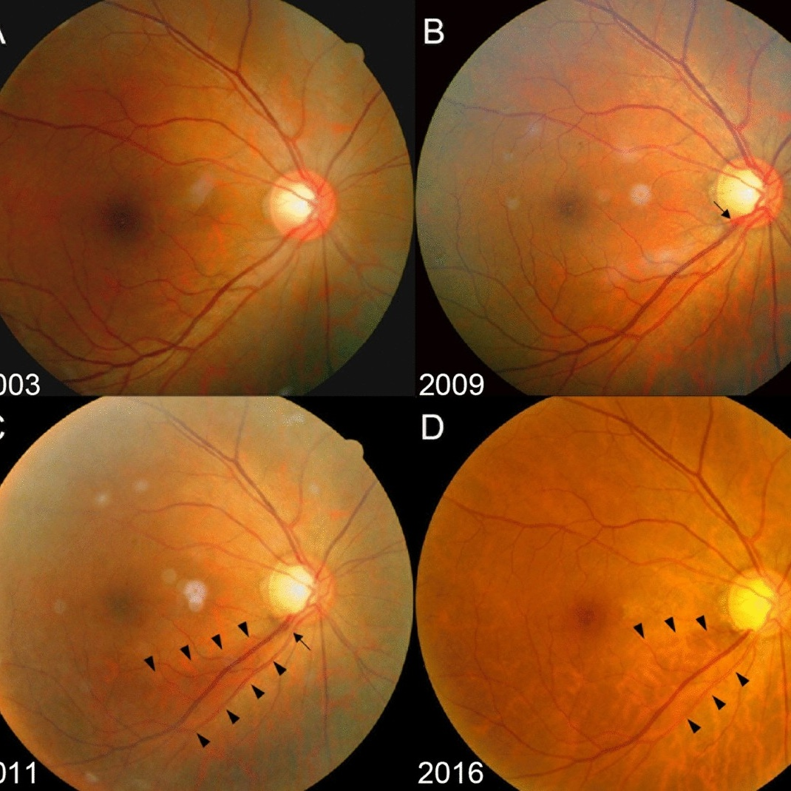
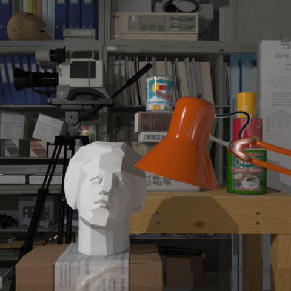
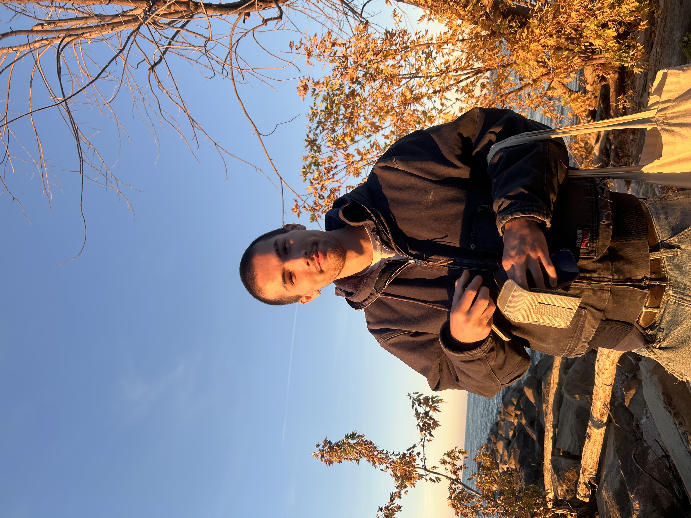

Created a convolutional neural network using the tensorflow and keras libraries to classify ASL alphabet hand signs.
Used model to categorize live video hand signs with libraries such as mediapipe and OpenCV.

Glaucoma Fundus Early Diagnosis Recognition Model
January 2024 - May 2024
Created a convolutional neural network image recognition model with frameworks and libraires such as tensorflow, keras, pandas and numpy in order to visually diagnose early onset glaucoma
Built multiple machine learning models and compared performance with various hyperparameter tuning to optimize model diagnosis accuracy

Stereo Reconstruction Model
August 2022 - December 2022
Created an image segmentation model used to create a depth map of inputted matching stereo image pairs using a pixel similarity matching algorithm and multiple-view geometry calculations.
Supreme Court Database Research Project
November 2022 - December 2022
Researched and designed a study on the ‘freshman effect’ in Supreme Court Justices
Created multiple linear models using R with packages such as lubridate, dplyr, and ggplot2 to optimize model predictive performance

About Me
Hi, I'm Jason Kuchtey, a recent graduate of Oberlin College with a BA in Computer Science and Politics. My passion lies in developing innovative solutions through machine learning and data analysis.
I have experience creating models for medical diagnostics and ASL sign interpretation, and I've contributed to bioinformatics research, including an RNA sequencing project published in the Journal of Biological Chemistry.
I enjoy building optimized, scalable models using tools like TensorFlow, Keras, and OpenCV, and I’m continually exploring ways to leverage technology for impactful applications. Connect with me on LinkedIn or check out my GitHub for more on my projects!